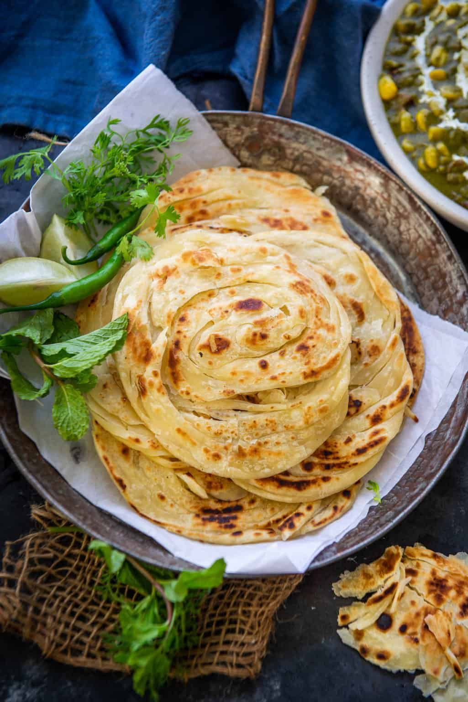

Home
Parotta

Description
Parotta is a layered Indian flatbread made from maida (refined flour) and oil,
commonly found in South India, especially in Kerala and Tamil Nadu.
It is known for its soft, flaky texture and is often served with various curries,
such as korma or beef fry. Parotta is distinct from North Indian paratha, which uses atta flour.
The preparation involves kneading the dough, layering it, and cooking it on a tawa until golden
Ingredients
- Flour (maida)
- Oil
- Milk
- Eggs
- Salt
- Sugar
Steps To Make Soft Parotta
- Mix the flour with salt and sugar in a bowl.
- Add milk and eggs (if using) to the flour mixture.
- Knead the dough until smooth and pliable.
- Roll out the dough and fold it to create layers.
- Roll the dough again and cut it into small balls.
- Roll each ball into a thin sheet and fold it.
- Roll the dough again and cut it into smaller pieces.
- Repeat the rolling and folding process to create layers.
- Cook the parotta on a hot skillet until golden brown.